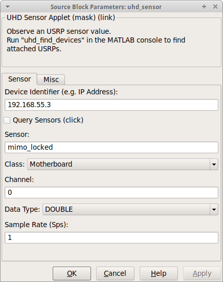
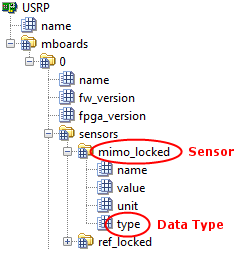
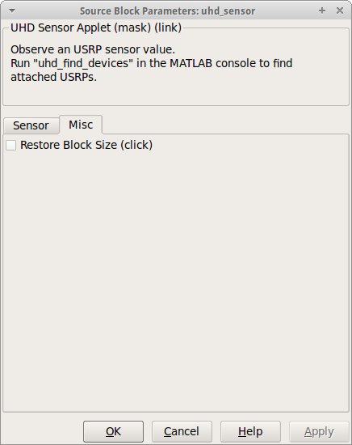

| Simulink-UHD |

| Select Tab Pane... |
|---|

Specify the identifier of the attached USRP. Possible identifiers are the IP Address (e.g. addr=192.168.55.3), the Serial Number (e.g. serial=EGR18WFRP), the Type (e.g. type=usrp2), or the Device Name (e.g. name=myUSRP). Available devices are displayed in the block description. The identifier should be non-ambiguous. In the case of an IP Address, the hint addr= can be omitted.
The Query Sensors checkbox acts like a push-button and displays information and parameters about the USRP (according to the identifier) using the USRP explorer and a special sensor filter. The parameters can be used to complete the whole UHD Sensor mask. (Just to make sure, the checkbox can't be selected.)
These sensor-specific values can be obtained by using the Query Sensors function.
Example: With the output of the USRP explorer (tree), one possible sensor could be: mimo_locked.
Specify the sample time (update interval) of the UHD Sensor block.

Restore the geometric size of the UHD Source block. The checkbox acts like a push-button and hence can't be set.
© 2012 Communications Engineering Lab • Homepage